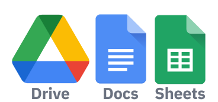

En el corazón de cada abogado reside el arte de las palabras. Cada término preciso, cada formulación lógica y cada argumento estructurado son el fruto de años de práctica y dedicación. Sin embargo, en el siglo XXI, este dominio del lenguaje puede convertirse en algo mucho más poderoso gracias a la tecnología.
💼 Abogados como tú impulsan el futuro de nuestro país 🇵🇪

¡OFERTA FINAL - SOLO HOY!Impresione a sus colegas y clientes con procesos rápidos y precisos gracias a este libro.
Disponible en– Herramientas seguras y confiables de Google
🚀¡Acceso disponible solo por tiempo limitado! Asegure su ventaja competitiva ahora 💼
El Derecho en la Era de la Inteligencia Artificial
La inteligencia artificial (IA) está transformando industrias, y el derecho no es la excepción. Para los abogados que lideren este cambio, las oportunidades son inmensas. Nuestra guía de ChatGPT para Abogados es la herramienta definitiva que le permitirá optimizar su práctica y convertir cada interacción con la IA en resultados legales impecables.
¿Por Qué Nuestra Guía Es Diferente?
En un mundo saturado de información y recursos técnicos, nuestra guía es destacada por ser práctica, accesible y creada específicamente para abogados en Perú. Esta no es una simple introducción teórica a la IA, sino un manual que le llevará paso a paso hacia la implementación real y efectiva de herramientas generativas en su práctica legal.
Testimonios de Éxito
"Estimado Christiam Ipanaque, su guía me ha cambiado la vida profesional. Si algo he aprendido con este libro es que puedo confiar en ChatGPT para hacer el trabajo "tedioso" por mí. Con estos comandos, le doy instrucciones claras y organizo documentos en segundos. Nunca imaginé que la tecnología sería tan accesible para nosotros. Gracias por poner en nuestras manos un recurso que transforma la calidad de nuestro servicio."
"Ingeniero Christiam, debo admitir que nunca creí que la inteligencia artificial pudiera integrarse tan bien a nuestra práctica. Gracias a su libro digital y a la lista de prompts para ChatGPT, ahora mis procesos son rápidos y eficaces. Hoy preparo documentos en minutos y tengo más tiempo para dedicar a mis casos y a mis clientes. Esta guía ha revolucionado mi manera de trabajar, y es, sin duda, un recurso esencial para cualquier abogado en Perú que quiera estar al día en el futuro del derecho."
"Ingeniero Christiam, Ahora genero contratos comerciales y organizo mis archivos con una facilidad que nunca pensé posible. No soy un experto en tecnología, pero su libro ha sido como una clase intensiva de transformación digital. Mil gracias por ayudarme."
Lo Que Nos Diferencia:
Enfoque Exclusivo en el Derecho Peruano:
Nuestra guía no es genérica. Está diseñada teniendo en cuenta las necesidades específicas del abogado peruano, desde el lenguaje técnico jurídico hasta los contextos locales.
Acción Inmediata:
No necesita conocimientos técnicos avanzados. Cada página está orientada a resultados rápidos y concretos: redacte contratos, analice jurisprudencia y prepare estrategias en minutos.
Comandos Probados y Optimizados:
Hemos desarrollado comandos precisos que se adaptan a los desafíos más comunes en el ámbito legal. Usted no necesita experimentar, solo aplicar.
Acceso Exclusivo y Limitado:
Esta guía es un recurso premium con disponibilidad restringida. Solo abogados comprometidos con su crecimiento tendrán acceso a este conocimiento transformador.
Transforme su Práctica Legal: Del Trabajo Manual a la Eficiencia Digital
Imagine un día típico en su despacho. Horas invertidas en la redacción de documentos, investigación exhaustiva y preparación de argumentos. Ahora imagine ese mismo día, pero con una herramienta que realiza esas tareas en segundos, permitiéndole concentrarse en lo que realmente importa: sus clientes y estrategias.
Con nuestra guía, esto es lo que podrá lograr:
Redacción Contractual en Minutos
En lugar de dedicar horas a redactar contratos desde cero, estructurará un comando que generará un borrador adaptado a sus necesidades. Solo necesitará revisarlo y ajustarlo.
Investigación Jurídica Simplificada
Olvídese de buscar manualmente jurisprudencia relevante. Emita un comando claro y obtenga un resumen con los precedentes más aplicables a su caso.
Comunicación Formal Eficiente
Cree correos electrónicos, cartas y documentos legales con el tono y formato precisos, ahorrando tiempo y manteniendo la profesionalidad.
¿El Resultado?
Menos tiempo dedicado a tareas rutinarias y más tiempo para desarrollar estrategias, construir relaciones con clientes y liderar casos con confianza.
Métodos Tradicionales vs. Nuestra Guía
Tiempo de Ejecución
Métodos Tradicionales
Nuestra Guía ChatGPT
Horas o días en redacción y análisis manual.
Resultados inmediatos con comandos estructurados.
Conocimiento Técnico
Métodos Tradicionales
Nuestra Guía ChatGPT
Depende de herramientas complejas o externas.
Sin tecnicismos: enfoque directo y práctico.
Costo de Implementación
Métodos Tradicionales
Nuestra Guía ChatGPT
Alto, con necesidad de personal y software especializado.
Bajos costos: una herramienta accesible desde cualquier dispositivo.
Personalización
Métodos Tradicionales
Nuestra Guía ChatGPT
Limitada al tiempo y recursos disponibles.
Respuestas ajustadas a cada cliente en segundos.
Adaptabilidad al Perú
Métodos Tradicionales
Nuestra Guía ChatGPT
Depende del recurso.
Diseñada específicamente para el marco jurídico peruano.
De la Idea a la Acción
ChatGPT es un asistente digital que responde a su liderazgo. Con nuestra guía, aprenderá a estructurar comandos claros, proporcionando contexto y detalles que harán que cada respuesta sea precisa y relevante.
Ejemplos Prácticos Incluidos en la Guía:
Cláusulas Personalizadas
Cree cláusulas específicas adaptadas a las necesidades de cada cliente.
Análisis de Políticas de Privacidad
Identifique riesgos y áreas críticas en documentos legales extensos.
Preparación de Resúmenes Ejecutivos
Simplifique información compleja para presentaciones o informes.
Estrategias de Negociación
Genere análisis tácticos para lograr resultados favorables en negociaciones.
Preparación de Testigos
Simule preguntas y respuestas para anticipar escenarios en juicios.
Dra. Cecilia Beatriz Ramos Torres
Me dedico al derecho corporativo y este libro ha sido esencial para la creación de acuerdos estratégicos. Realmente innovador.
❤️
Lic. Ricardo López Fernández
SOY ABOGADO CIVILISTA Y HE USADO EL PROMPT PARA LA REDACCIÓN DE DEMANDAS DE DIVORCIO. ¡QUEDÓ PERFECTO! MUY RECOMENDADO.
❤️
Gabriela Elizabeth Chávez Castillo
Como abogada penalista, he encontrado el prompt para prever contraargumentos extremadamente útil.
❤️
Luis Alberto Ramírez Cornejo
Tenía dudas al principio, pero los resultados hablan por sí solos. Usé un prompt para revisar contratos y señalar riesgos, y funcionó...
❤️
Dr. Jorge Eduardo Salinas Rivera
Probé el prompt para generar estrategias legales y quedé muy satisfecho.
❤️
Por Qué No Puede Esperar
El mercado legal está evolucionando rápidamente. Cada día más abogados adoptan herramientas de IA, ganando ventaja en productividad y precisión. Si no actúa ahora, corre el riesgo de quedarse atrás en un entorno cada vez más competitivo.
Esta es su oportunidad para destacar.No se trata solo de adoptar tecnología, sino de liderarla con confianza y claridad. Nuestra guía no solo le enseñará a usar ChatGPT, sino que le permitirá convertirlo en una extensión de su habilidad profesional.
Más Que una Guía, Una Transformación
Habilidad para Dominar la IA
Convierta una tecnología avanzada en un recurso cotidiano y fácil de usar.
Optimización de Tareas Repetitivas
Libere su tiempo y energía para enfocarse en las decisiones estratégicas.
Ventaja Competitiva Sostenible
Sea un pionero en la integración de IA en el derecho peruano.
El Momento Es Ahora
Con solo unas horas de dedicación, podrá transformar su práctica para siempre. ¿Por qué esperar? Cada comando que aprenda a estructurar será un paso hacia una práctica legal más rápida, precisa y exitosa.
¡No lo piense más! Asegure su guía ahora antes de que se agoten las copias disponibles.Este es el momento de tomar el control, liderar con sus palabras y aprovechar el futuro del derecho en el Perú.
"La IA no reemplaza a los abogados, los potencia. Usted no pierde control, lo amplifica."
Descargue nuestra guía y sea el abogado que lidera el cambio.